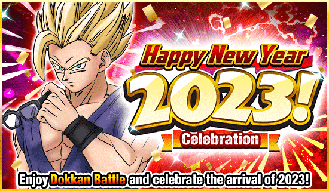
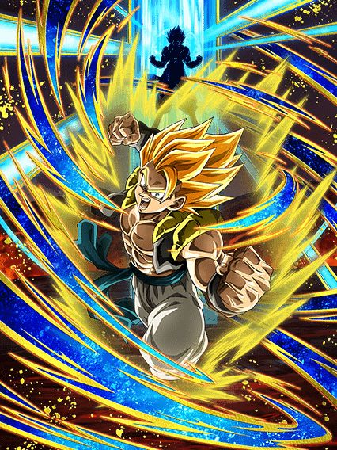
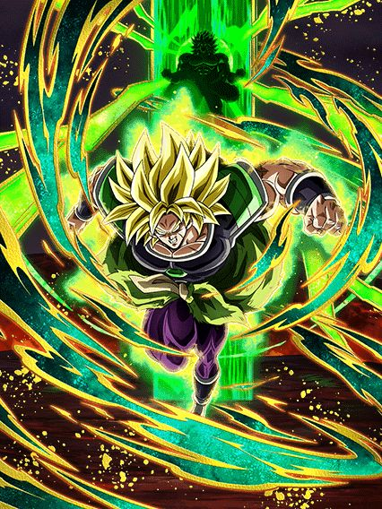
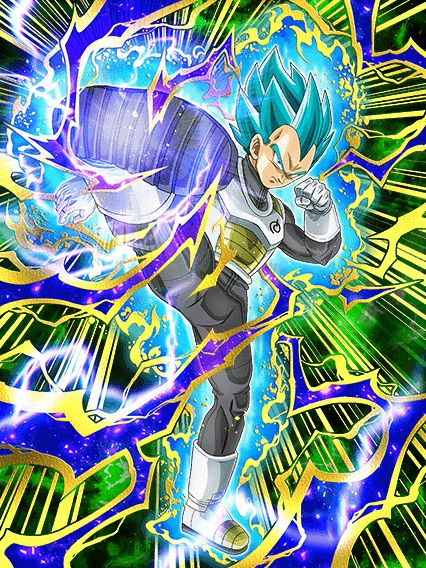
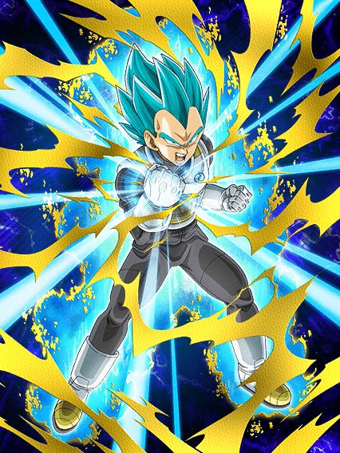
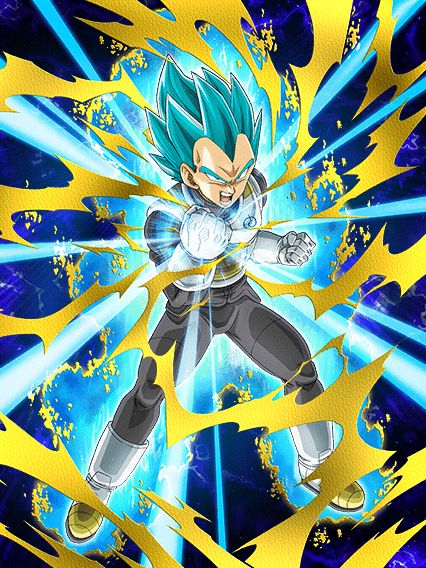
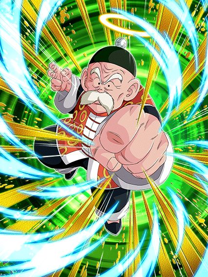

Novo ano, novo dokkan.
Normalmente seria até interessante se não fosse pelo fato de estarmos no meio da celebração do filme, que apesar de arruinada, é boa, então tamo aí

Torce pra ele desviar mlk.
Esse cara é o seguinte, vc absolutamente TEM q enrolar até o turno 4 q é onde ele se transforma agora, pq o gogeta tem um daninho ali mas a defesa dele é pouca e ele só tem 50% de chance de desvio
Então agradeçamos aos deuses dos ezas que mudaram a transformação do turno 5 pro 4, e boa sorte no desvio.

Gogeta, cook.
Eu gosto de como esse card é simples e direto, ele tem 200% de ATK e DEF, dá crítico garantido em tudo e tem 70% de chance de desvio, acabou
E COM ISSO ELE É INCRÍVEL
Esse cara ainda ganha um buffzinho temporário depois de desviar por 4 TURNOS, no super ele aumenta o ATK e DEF em 50% por 4 turnos tmb, ou seja, independente de onde vc jogue ele na luta ele vai estar no melhor estado possível
Esse cara é bem direto, vc deixa ele de floater pra dar bastante dano ou no slot 1 pelo desvio, é isso
Só cuidado pra não estar enfrentando a red zone do cell na fase phy dele.. se não vc libera a mecânica secreta de cozinhar dentro do jogo (obrigado datruth pela gameplay impressionante)

Sinto dizer, mas esse é um card de world tournament.
Ele tem uns números até decentes, um adicional e tals mas ele precisa estar enfrentando mais de um inimigo, e mesmo assim, ele transforma depois então contanto q vc não use ele em rotação principal como um maluco, acho q fica tudo bem
Chegando no turno 4..
")
Quer saber? Talvez ele era mais útil antes de transformar..
Bom, agr o broly é um personagem genérico que dá dano, ele ganha mais buffs quando tá contra só 1 inimigo e tem buffs menores contra múltiplos inimigos
No geral esse cara é só números, oq é meio triste pq só isso é obviamente não o suficiente, ele podia ter sido tão melhor.. ou pelo menos no nível do gogeta né, qual é..

NÃOO GOHAN PQQQ?????
Esse deve ser o card do gohan que derrubou a semente dos deuses no filme, como zuaram um eza de um personagem tanto?
Esse gohan tinha a base perfeita pra um eza, buildava atacando, tinha adicional, tinha crítico, passiva maneira, animações incríveis, arte perfeita pra um sticker.. E ELE É UM DESASTRE
O eza não mudou nada nele, ele é praticamente o mesmo card, eles deram 58% de DEF a mais se estiver enfrentando um android e falaram q tava bom cara, como é possível..
É sério, esse card é um desapontamento pior q o fraudehan, eu já tava preparado pra upar os links desse cara e tudo, pq fizeram isso com ele? 💀

Isso foi um dos piores momentos de PURO ÓDIO do global, é sério
Estamos numa CELEBRAÇÃO COMPARTILHADA global, tivemos cards de summon e F2Ps, eventos, recompensas, tudo igual, EXCETO ISSO NÉ?
Só.. não fez sentido nenhum, o gohan e o cell tavam como deuses no jp e o global mofando, como assim mlk
E o pior é q nunca foi dada uma explicação de pq, eles só mandaram os ezas tipo, um mês atrasado, simplesmente sem sentido..

O tank da classe extreme desde 1595.
Esse card não ironicamente é MUITO BOM e envelheceu bem por ser um tank muito brabo no começo da partida, q recentemente é o maior perigo
O grande problema dele foi o lançamento, todo mundo saiu sem DSs de uma celebração gigante, isso completamente destruiu o valor q esse banner tinha pra qualquer jogador do global, mas fazer oq né
Bom, o freeza tem balanceados 90% de redução de dano no turno 1, e essa redução de dano vai diminuindo a cada turno até cair pra 30%, mas pô até lá já vai ter acabado a luta
E ele ganha mais 50% de ATK tomando 5 ataques, e mais 50% de DEF atacando 5 vezes
Pra completar esse cara lança um adicional garantido contando que esteja acima de 50% de HP e caso caia, tem uma active muito braba pra compensar, card muito forte slk, pq tinha q ser numa legendary summon aleatória?
  

Spoiler: todos são mid.
O AGL precisa de um time full mastered evolution pra ainda ter uma passiva fraca pra caramba
O STR é levemente melhor mas precisa de um time realm of gods e não, ele não é bom o bastante de qualquer jeito
O único q se salva é o PHY, por ele ser um orb changer e um lider nuker, bom pro evento da máquina de soco ou algo nesse estilo
O PHY ainda tem a vantagem de ser oficialmente o card de "não deixar o goku gt phy trocar tudo pra rainbow e zuar a sua partida", já q o orb change dele troca rainbow orbs pra phy, meio meh mas ajuda mais doq parece..

Eu acho esse card legal, ok?
Pior q ele não é necesariamente ruim, obviamente ele não tem a melhor tankagem do mundo mas se vc estiver abaixo de 50% de HP ele tem 50% de redução de dano, isso na minha opinião é até bem forte, além de ele stunar e dar crítico garantido se tomar um golpe, até que não é um dos piores F2Ps de todos..

50% de chance de defesa ativa volta com uma vingança.
Bom, esse não é o card mais insano mas ele quase funcionaria bem..
No geral ele tem números bons na passiva e até vira um suporte brabo se tiver um gokuzinho no time, o grande problema dele é ter 50% de chance de defesa ativa só quando a vida estiver abaixo de 58% ainda, aí é triste né..
Você chegou ao fim dessa página!
Obrigado por ler tudo, e fica a vontade pra ver outras